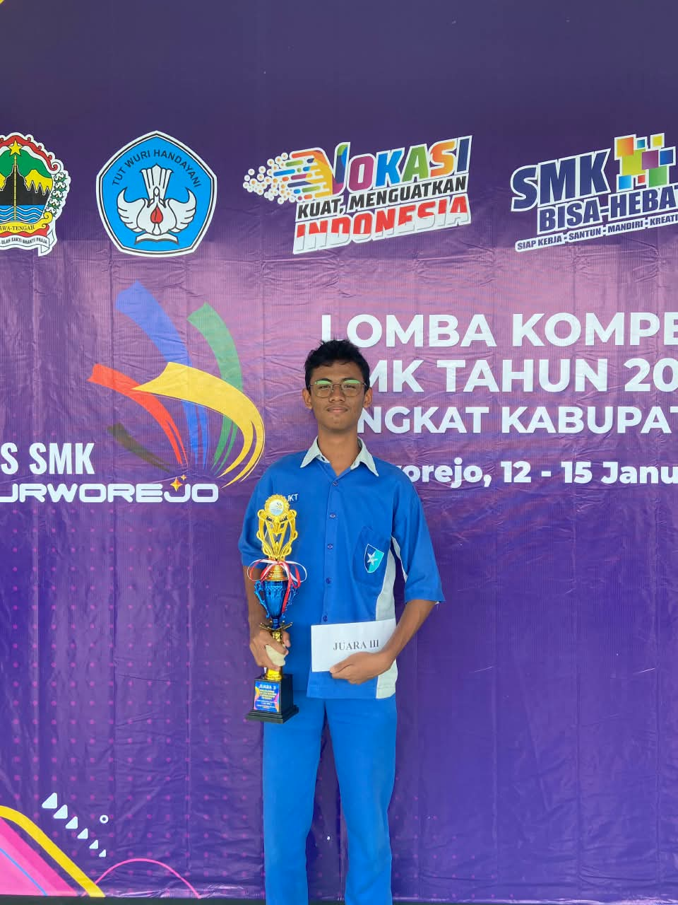
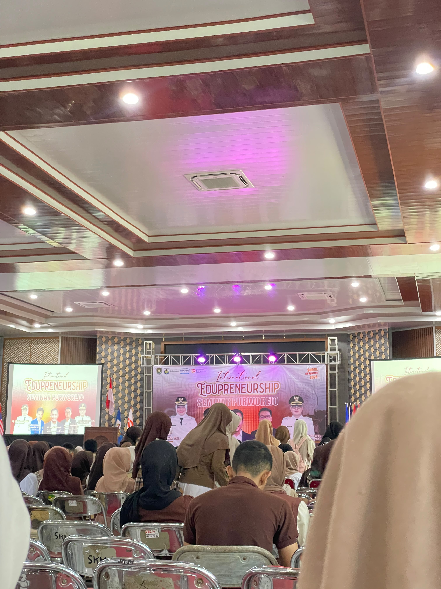

Latar Belakang
Seorang siswa SMK yang memiliki ketertarikan besar pada dunia teknologi digital, dan inovasi teknologi. Saya senang mengeksplorasi bagaimana teknologi dapat diterapkan untuk menyelesaikan masalah nyata dan menciptakan solusi yang bermanfaat. Saat ini, saya terus belajar dan mengembangkan diri di bidang programer dan dunia digital secasra lebih luas.
Skills & Expertise
Softskills
- check_circle Komunikasi
- check_circle Team Work
- check_circle Manajemen Waktu
- check_circle Problem Solving
Keahlian
Riwayat Pendidikan
Sekolah Menengah Kejuruan
SMK TI KARTIKA CENDEKIA PURWOREJO
2023 - 2026
Sekolah Menengah Pertama
SMP 24 PURWOREJO
2020 - 2023
Sekolah Dasar
MI HIDAYATUL HASANAH
2014 - 2020
Pengalaman Organisasi
PMR di sekolah
Anggota Aktif Palang Merah Remaja
Komunitas TJKT di sekolah
Anggota Komunitas Teknik Jaringan Komputer dan Telekomunikasi
Awards & Achievements

Juara 3 LKS Purworejo (Software)
emoji_events Lomba Kompetensi Siswa

Seminar International Edupreneurship Summit
workspace_premium Peserta Seminar